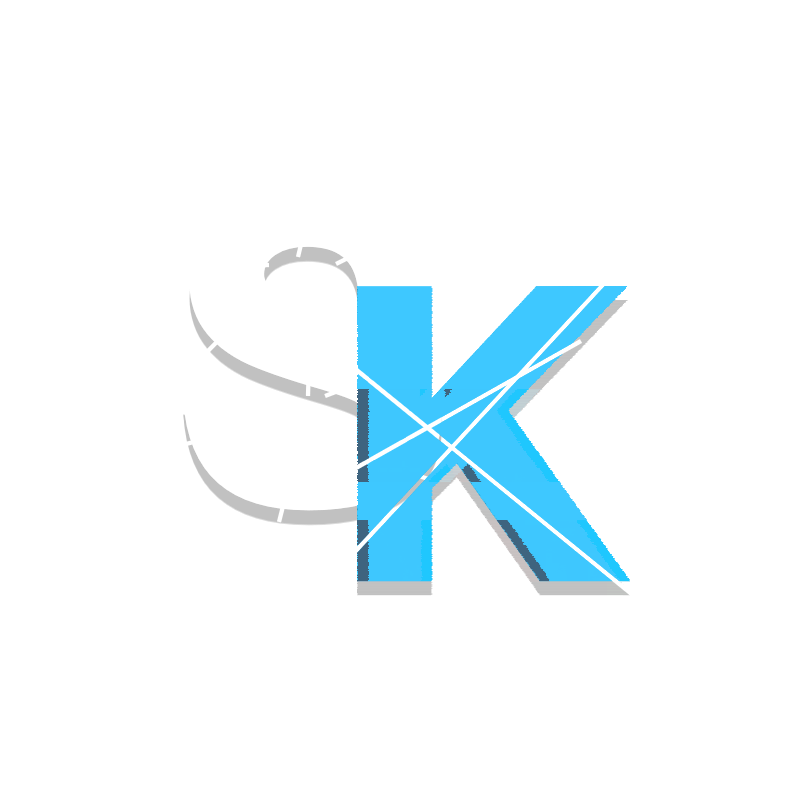

Tietoa Ryhmästämme
Teimme yhteisön, jotta näistä asioista olisi
helppo keskustella ja kehittyä.
Palvelimella on päivittäin
keskustelua ja haluamme auttaa muita, jolloin kehittyminen
tietokonemaailman asioissa olisi mukavaa ja helpompaa.
Yhteisö on
tarkoitettu kaiken ikäisille ja tasoisille, ja kaikki ovat
lämpimästi tervetulleita.